HAGLÖFS
Reimagining
premium outdoor
e-commerce.
A client project exploring how Haglöfs could make its product page feel more premium — while preserving clarity, product truth and responsible use of AI.
Project facts
Client-based school project
7 weeks
Role: UI/UX Designer & Client Representative
Competitor research · Regulation research · PDP design · User testing

The problem
Haglöfs sells at a premium price, but its product page felt generic — accurate, but not distinctive.
What I did
Researched competitors and EU AI rules, designed two product-page directions, and moderated eight user tests.
The result
A tested, progressive-disclosure product page for desktop and mobile — with AI imagery labelled by design.
01Overview
The challenge
Haglöfs asked how AI could make its product pages feel premium and produce content at scale. We reframed the brief around what they already had — their existing product photography, with no reshoots. That split the work into two questions.
Two questions, one team
Question 1 · The team
What AI — and what should it generate?
Which AI approach could make existing photos feel premium — consistently and affordably? My teammates researched and tested it.
Question 2 · My focus
Where should AI imagery live on the page?
Where on the product page should AI imagery appear, and how should it be shown so it never misleads? This was my part.
02My contribution
Where I made the difference
UI/UX design
Two product-page directions for desktop and mobile — including the icon summary and material close-ups.
User testing
Moderated eight sessions. The findings chose the final design.
Responsible AI
Turned EU and Swedish rules into a visible AI label.
Stakeholder management
Main contact with Haglöfs. Kept the team aligned and narrowed the scope to the product page.
03From research to design
The research had one job:
make the design decisions easier to defend.
Premium brands don’t add more content. They use clearer hierarchy, context and progressive disclosure to make value easy to see.
What makes premium, premium?
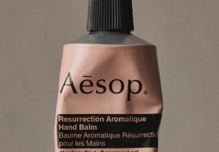
Aesop
Simplicity and minimalism
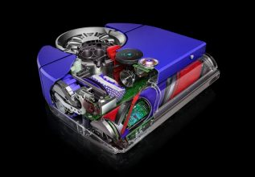
Dyson
Engineering made easy to understand
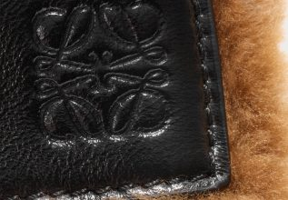
Loewe
Craft shown — the handmade made visible
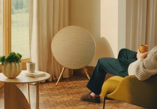
Bang & Olufsen
Materials before features
Four kinds of premium product content
Product photos
Clean, simple e-commerce imagery.
Product video
Movement and cutaways that explain the product.
Fabric close-ups
Materials and details you can almost touch.
Real environments
The product where it belongs — outdoors.
From product documentation → to product demonstration.
04Question 1 · The team
Question 1: a custom-trained model,
not an off-the-shelf tool.
My teammates’ work — included because it shaped where imagery could go. They compared four ways Haglöfs could use AI:
What a LoRA is
A small trained layer on top of an existing image model that teaches it one consistent Haglöfs look.
What testing showed
A few consistent training images beat many inconsistent ones.
The recommendation
A 2–6 week pilot (15–50K SEK) on products that are already released.
Training results
Test 1 · 12 mixed training pairs
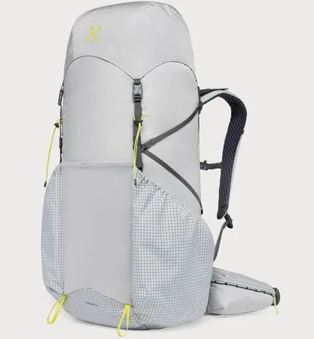
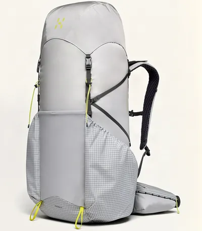
Test 2 · 3 consistent training pairs
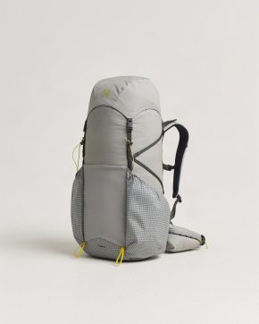
05Question 2 · My focus
Question 2: where should AI imagery
go on the page?
This was my part. I studied how outdoor brands use imagery on their product pages, then designed two directions to test.
Two inspirations, two directions
Two brands from my UI/UX review became the two directions:
Arc’teryx · Beta AR jacket
Technology explained visually
→ Direction A — Progressive disclosure
Norrøna · Lofoten Gore-Tex Pro
Campaign photography on the product page
→ Direction B — Campaign storytelling
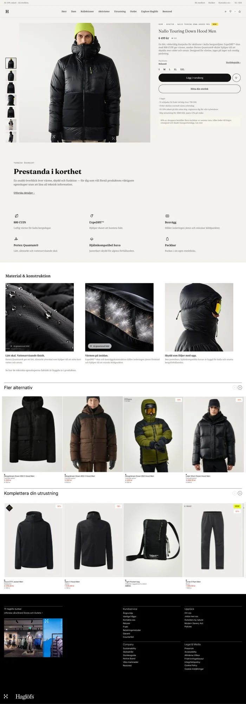
↓ A — Shopping modules: more options & matching gear
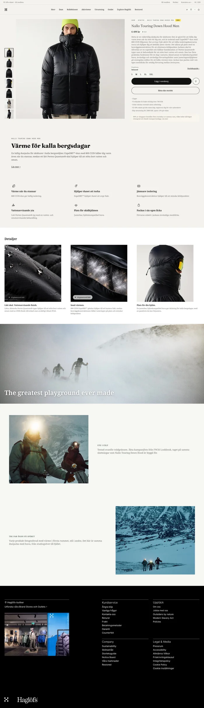
↓ B — Campaign storytelling replaces the shopping modules
06User testing
Two directions, eight sessions,
one clear winner.
I moderated eight sessions comparing the two directions, with a teammate taking notes. Participants were mostly schoolmates, so the results are directional.
Findings
Most preferred A for scannability and faster access to specs. Most weren’t put off by AI imagery; a minority raised sustainability concerns, not quality ones.
Decision
Direction A became the final design. The findings decided it — not our own opinions.
Quotes from user testing
“I prefer material and specs shown as icons.”
“Bigger images and clearer visual presentation aid understanding.”
Result · Direction A chosen
07Final design
Turning technical product value
into something users can see.
Purchase essentials first; then an icon summary, material close-ups and full specs on demand. The scope narrowed to the product page at Haglöfs’ request.
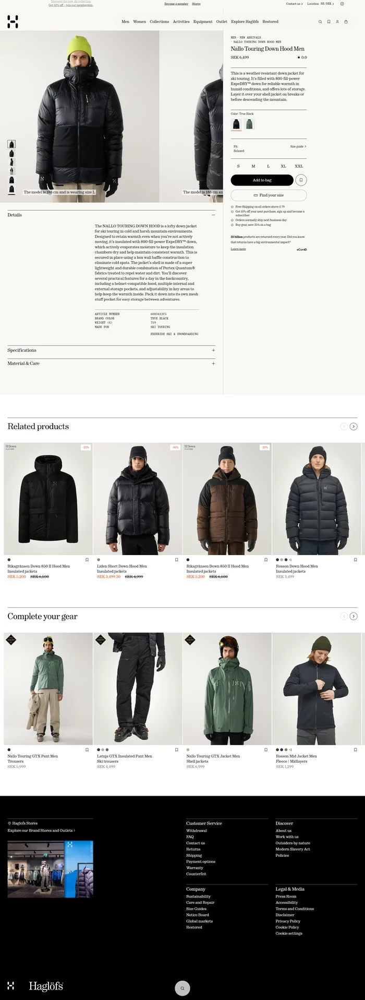
What I changed — and why
Details on demand
Replaced the long “Detaljer” text with a short summary and an “Utforska detaljer” link to the full specs.
Specs as icons
Added “Prestanda i korthet”: six key specs as icons. Testers found icons faster to scan than paragraphs.
Material close-ups
Added macro close-ups that make the water-repellent shell and down construction visible — inspired by how Dyson explains its tech.
Labelled AI imagery
Added a label on each AI-generated close-up, visible at first exposure and readable without relying on colour.
08Responsible AI
Transparency became a
design requirement, not a footnote.
I read the original EU and Swedish legal texts myself. Three rules shaped the design:
01 · EU AI Act, Article 50
Label realistic AI images clearly, from the first view.
→ The label sits on the image itself, not in a footnote.
02 · WCAG accessibility
Never rely on colour alone.
→ A high-contrast text label, with alt text.
03 · Swedish Marketing Act
Don’t imply qualities the product doesn’t have.
→ AI adds context, but never changes colour, fit or construction.
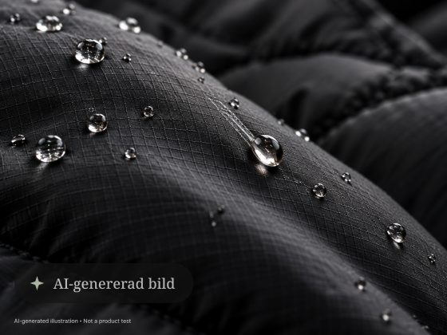
The label is a design response to these principles — not a legal claim about exact wording.
10Outcome
The project ended in a tested
PDP direction — chosen by
evidence, not opinion.
Familiar shopping patterns, a clearer hierarchy, visible material proof and transparent AI imagery, tested with eight users and designed for desktop and mobile.
What I learnedLaw can be a design constraint: the AI label is the regulation made visible. Next time, I’d test with people closer to Haglöfs’ real customers.